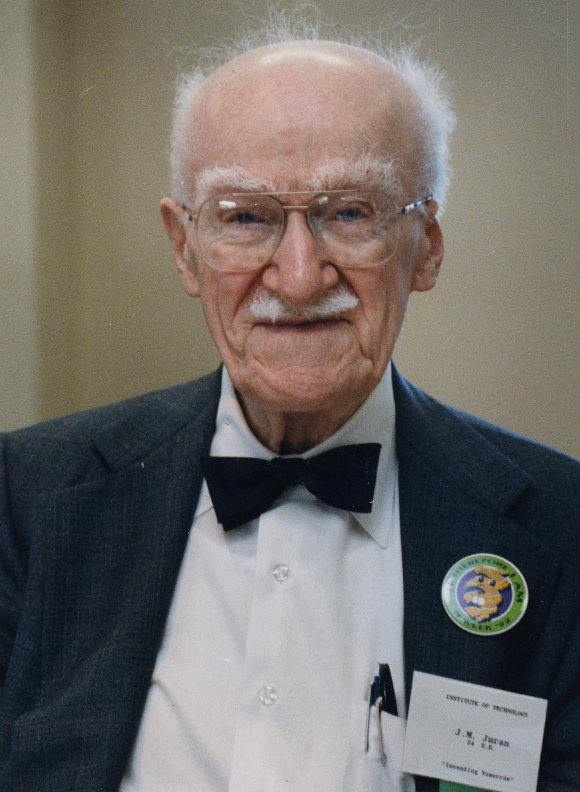

Origins of Lean Six Sigma
The earliest roots of Lean Six Sigma can be traced back to the late 1700s and early 1800s to a man named Carl Gauss. Gauss's theories on normal curves and their relation to probability led to the Gaussian curve and the idea of derivations. This idea of deviations was further developed in the 1920s with Walter Shewhart's sigma theories. Shewhart discovered that a process reaches the point of requiring correction when it is three sigma, or points of deviation, away from its original target or purpose and thus requires constant effort to keep it away from deviation.
This idea was further expanded upon by the Bell Telephone System during the time of the first World War. The Bell Telephone System believed in the application of “continuous improvement” in all of its business dealings and production processes and in the belief of setting and reaching improvement goals on a monthly and annual basis. The Bell Telephone System's influence on Lean Six Sigma's eventual development was massive as the company was the first to truly instill in its dealings the belief that “Organizations that permit mediocrity get mediocrity. Organizations that permit errors get errors. Organizations that permit deadlines continue to miss deadlines. Organizations that permit poor management get poor management.”

Despite these early seeds of Lean Six Sigma, the term itself did not emerge until the automobile boom of the 1980s. The term was coined by a Motorola engineer by the name of Bill Smith as a name for the new improvement and product quality process Motorola was developing. This new quality-ensuring process was created as a direct response to American businessman Joseph Juran's work with the Japanese production industry, a thirty-year collaboration that transformed Japanese companies from post-WWII junk manufacturers into living synonyms of quality and innovation. After the second world war, Japan's reputation as a product manufacturer was comparable to their success in the war, with products exported out of the country considered worldwide as poorly-made, unusable items. Joseph Juran's belief of improve or die led a massive increase in the quality level and reputation of the country as a manufacturing export. This level of quality was achieved through constant and consistent research and innovation regardless of the commercial viability of any product's current form.
Motorola became one of the first companies to apply this method of manufacturing to an American company in 1986 when it implemented Six Sigma to keep up with the constant improvement of Japanese products. This idea of avoiding deviations from the original product through constant improvement led to the evolution of Six Sigma from a method of copying Japanese ideas to achieve business success into the goal of improving processes and products on a constant rather than squeaky wheel basis. Six Sigma's success in the Motorola company was so great that other manufacturers like General Electric, Honeywell, and Ford adopted and refined the idea throughout the 1990s and early 2000s, leading to Six Sigma transitioning from a quality control system into the greater business philosophy Lean Six Sigma that it is known as today.